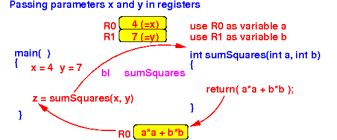
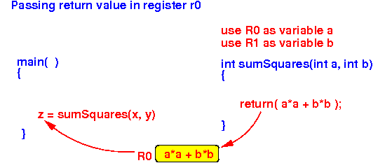
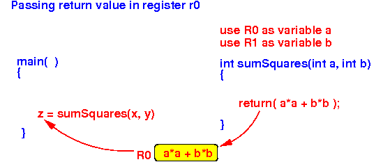

- Consider the following
function invocation:
/* ---------------------------------------------- sumSquares(a,b): returns (a*a + b*b) ---------------------------------------------- */ int sumSquares( int a, int b ) { return (a*a + b*b); } void main( ) { int x, y, z; z = sumSquares(x, y); }
- We will pass the parameters
and pass the return value as follows
using register:
 sumSquares assumes that all register are "free" (unused) sumSquares reserves r0 to store parameter x and r1 to store parameter y main passes the parameter x in the register r0 main passes the parameter y in the register r1 sumSquares passes the return value back in the register r0
- Using the
agreed registers,
the main( ) method
will pass the
parameters x and y
and
use the return value
as follows
(illustrtated in assembler code):
/* ------------------------------------------------- Pass parameter x by copying its value in reg r0 ------------------------------------------------- */ movw r0, #:lower16:x movt r0, #:upper16:x ldr r0, [r0] /* ------------------------------------------------- Pass parameter y by copying its value in reg r1 ------------------------------------------------- */ movw r1, #:lower16:y movt r1, #:upper16:y ldr r1, [r1] /* ---------------------------------------------------------------- call z = sumSquares(x,y): agreed inputs: r0 = x, r1 = y ---------------------------------------------------------------- */
bl sumSquares // Call sumSquares
/* -----------------------------------------------------------------
Agreed return location: r0 = return value

Save return value (in r0) to variable z (z = sumSquares(..))
----------------------------------------------------------------- */
movw r1, #:lower16:z // Do NOT use r0 !!!
movt r1, #:upper16:z // (Because r0 contains the return value)
str r0, [r1] // This will store return value in z
---------------------------------------------------------------- */
bl sumSquares // Call sumSquares
/* -----------------------------------------------------------------
Agreed return location: r0 = return value

Save return value (in r0) to variable z (z = sumSquares(..))
----------------------------------------------------------------- */
movw r1, #:lower16:z // Do NOT use r0 !!!
movt r1, #:upper16:z // (Because r0 contains the return value)
str r0, [r1] // This will store return value in z
- Using the
agreed registers,
the sumSquares( ) method
will get the
parameters a and b
and
pass the return value
as follows
(illustrtated in assembler code):
/* ---------------------------------------------------------------- Function sumSquares(a,b): agreed inputs: r0 = a, r1 = b agreed return: r0 = return value ---------------------------------------------------------------- */ sumSquares: // When sumSquares begin, we will have: r0 = a, r1 = b
mul r2, r0, r0 // r2 = a*a (use r0 as var a)
mul r3, r1, r1 // r3 = b*b (use r1 as var b)
add r0, r2, r3 // r0 = a*a + b*b
// The return value is now in r0
mov pc, lr // Return to the caller
- Example Program:
(Demo above code)

- Prog file: /home/cs255001/demo/asm/8-sub/reg-param1.s
How to run the program:
- To compile: as255 reg-param1
- To run: use EGTAPI